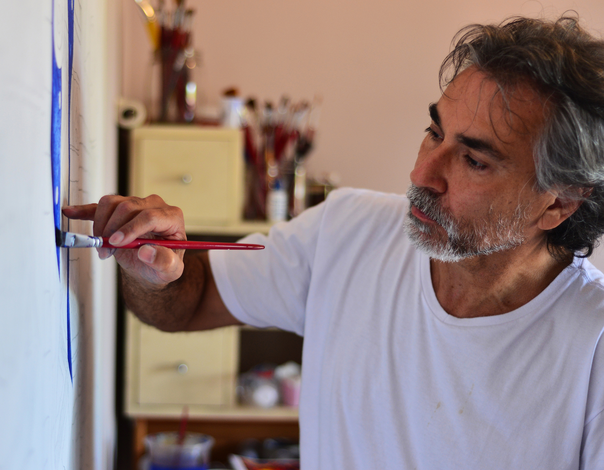

Artista natural de Porto Alegre, no sul do Brasil. Suas pinturas criam um diálogo entre símbolos universais e a essência da natureza interior, influenciadas pela cultura africana, pelos povos originários e pela rica tradição da arte brasileira.
Paulo de Araújo explora formas geométricas e jogos de espaço para revelar a beleza misteriosa e convidativa de suas obras. Cada peça é uma expressão única que conecta o espectador a algo maior e transcendente. Descubra um mundo onde tradição e inovação se encontram.